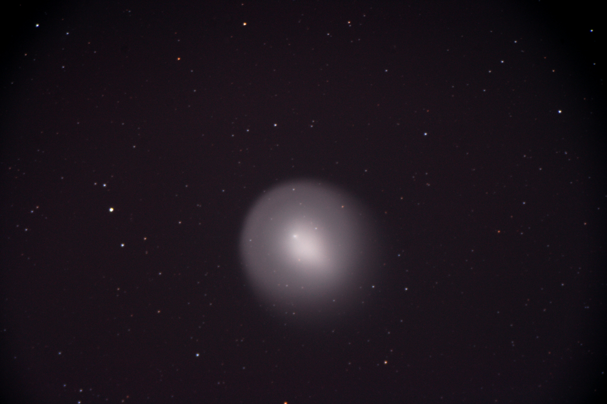
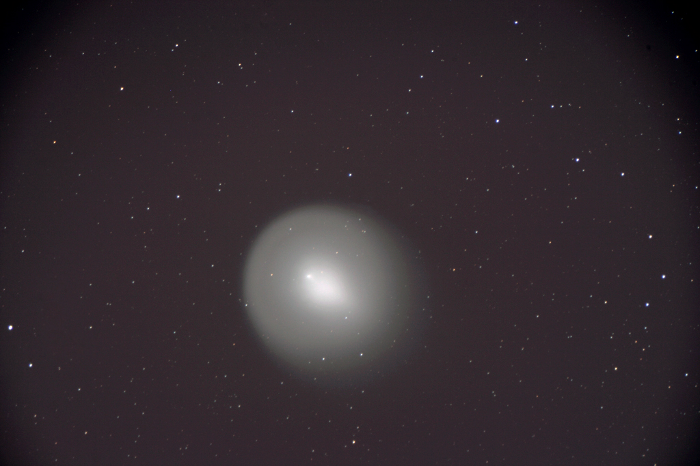

Comet 17-P Holmes
| These are images of Comet 17-P Holmes. |
 |
| Comet Holmes 10-24-07 in color
40xLRGB, 0.25 Sec., Combined and Processed in MaxIm DL, Meade 10" LX200, Meade DSI ProII |
 |
| Comet Holmes 10-24-07
One 1 sec. image, Meade 10" LX200, Canon Rebel XTi |
 |
| Comet Holmes 10-25-07
40 images 0.20 Sec. each, Combined and Processed in MaxIm DL, Meade 14" LX200GPS, Meade DSI ProII |
 |
| Comet Holmes 10-31-07
One 60 sec. image, Canon 75-300mm @ 300mm, f/5.6, Canon Rebel XTi, ISO 200 |
 |
| Comet Holmes 10-31-07
One 45 sec. image, Celestron 80mm refractor, Canon Rebel XTi, ISO 400, mounted on Meade 12" LX200 for tracking |
 |
| Comet Holmes 10-31-07
Three 10 sec. images, combined in MaxIm DL, Meade 12" LX200, Canon Rebel XTi, ISO 1600 |
 |
| Comet Holmes 11-05-07
14 20 sec. images, combined in MaxIm DL, Orion 80mm refractor, tracking on a Meade 12" LX200, Canon Rebel XTi, ISO 1600 |
|  |
| Comet Holmes 11-06-07
One 600 sec. image, Processed in Photoshop, Orion 80mm, Canon Rebel XTi, ISO 400 Tracking on Meade 12" LX200 |
|  |
| Comet Holmes 11-07-07
One 1200 sec. image, Processed in Photoshop, Orion 80mm, Canon Rebel XTi, ISO 100 Tracking on Meade 12" LX200 |
 |
| Comet Holmes 11-14-07
30 4 sec. images, combined in MaxIm DL Celestron 80mm, Meade DSI ProII, Tracking on Meade 12" LX200 Taken for Charlie Jui's Women In Physics course. |
 |
| Comet Holmes 11-14-07
One 17 min. image, Processed in Photoshop, Celestron 80mm, Canon Rebel XTi, ISO 200 Tracking on Meade 12" LX200 |
 |
| Comet Holmes 12-03-07
One 11 min. image, Processed in Photoshop, Celestron 80mm, Canon Rebel XTi, ISO 400 Tracking on Meade 12" LX200 |
 |
| Comet Holmes 12-03-07
Three 11 min. image, Stacked in MaxIm DL Processed in Photoshop, Celestron 80mm, Canon Rebel XTi, ISO 400 Tracking on Meade 12" LX200 |
| Comet 17-P Holmes was first discovered in November of 1892 by an English amateur astronomer Edwin Holmes. He noted that it was about 4th magnitude. The comet outburst this time started on October 24th, 2007 and was first noticed by A. Henriquez Santana in the Canary Islands. The comet up to this point was a meager 17th magnitude; but on this night, it would jump to around 8th magnitude by the time Santana noticed. A few hours later, it would be shining at an amazing 3rd magnitude (estimated). Since that night, the coma has been expanding and has now reached an estimated 10 arc minutes in diameter as of November 1st. This has become a naked eye object and can be seen clearly in binoculars. For updates and more information, visit Sky and Telescope. |
| As of 12-3-07, Comet Holmes has decreased in brightness and increased in size dramatically. It is no longer easily visible from Salt Lake City except for on exceptionally dark nights. It has become difficult to distinguish it even in a moderate sized telescope in Salt Lake. I suggest going to darker skies soon before it dims beyond the ability of the unaided eye to see it. |
| Return Paul's Pictures |